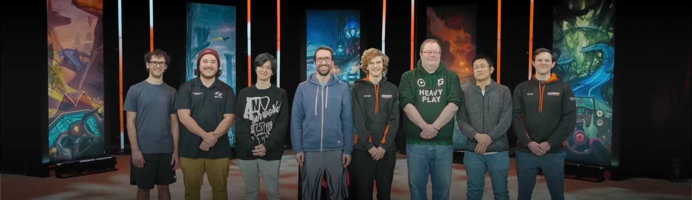
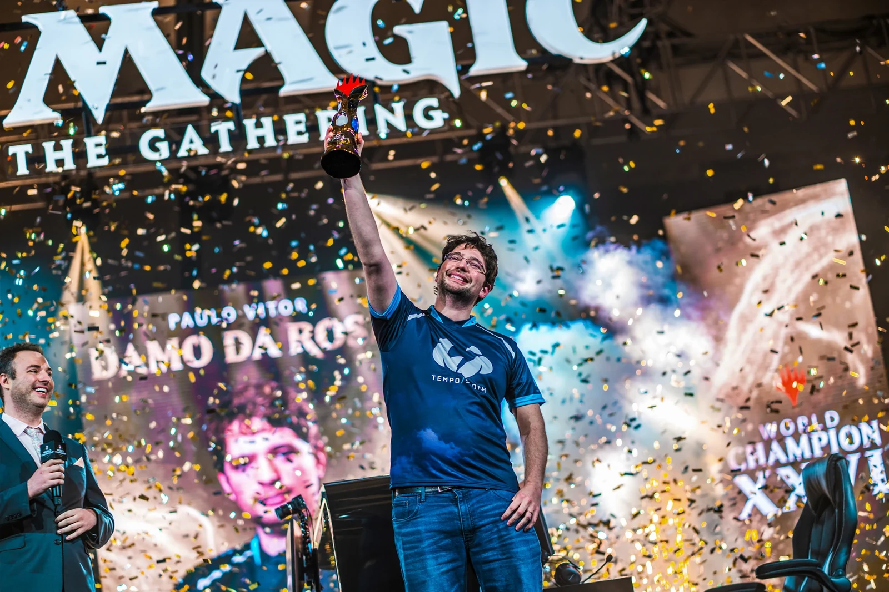

Pro Players
Il Mondo Competitivo di Magic
Magic: The Gathering non è solo un gioco da tavolo tra amici: è uno degli esport di carte più longevi e prestigiosi al mondo. Fin dal primo Pro Tour nel 1996, il circuito competitivo ha visto emergere giocatori straordinari, capaci di trasformare la padronanza del gioco in una vera e propria carriera professionistica. Con premi in palio che raggiungono centinaia di migliaia di dollari, il livello di competizione è elevatissimo.
Jon Finkel — "The Machine"
Considerato da molti il più grande giocatore di Magic di tutti i tempi, Jon Finkel ha dominato la scena competitiva tra la fine degli anni '90 e i primi 2000. Vincitore del Campionato del Mondo 2000 e di tre Pro Tour, Finkel è stato il primo giocatore a entrare nella Hall of Fame di Magic nel 2005. Il suo soprannome, "The Machine", riflette la precisione quasi meccanica con cui analizza ogni situazione di gioco, trovando sempre la linea ottimale anche nelle posizioni più complesse.

Kai Budde — "The German Juggernaut"
Il tedesco Kai Budde detiene un record probabilmente imbattibile: sette vittorie ai Pro Tour, più di qualsiasi altro giocatore nella storia. Dominatore assoluto tra il 1999 e il 2003, Budde vinse anche il Campionato del Mondo nel 1999. La sua capacità di leggere il metagame e di adattarsi a qualsiasi formato lo resero praticamente inarrestabile nel suo periodo d'oro. Inserito nella Hall of Fame nel 2007, resta un punto di riferimento per ogni aspirante professionista.

Paulo Vitor Damo da Rosa (PVDDR)
Il brasiliano Paulo Vitor Damo da Rosa è uno dei giocatori più costanti e longevi nella storia del circuito competitivo. Con oltre 20 Top 8 ai Pro Tour e una vittoria al Campionato del Mondo 2020, PVDDR ha dimostrato un'eccezionale capacità di restare ai vertici per quasi due decenni. La sua forza risiede in una preparazione meticolosa, un'analisi profonda del metagame e una capacità di scrittura strategica che ha ispirato intere generazioni di giocatori attraverso i suoi articoli e guide.

Il Pro Tour e il Circuito Competitivo Oggi
Il sistema competitivo di Magic si è evoluto nel corso degli anni. Oggi il circuito ruota attorno ai Pro Tour (tornei d'élite su invito), le Regional Championships (qualificazioni nazionali) e i tornei Magic Arena Championship per il versante digitale. I migliori giocatori del mondo si sfidano per accumulare punti e guadagnarsi un posto al Campionato del Mondo, l'evento più prestigioso dell'anno.
La scena competitiva italiana è sempre stata vivace, con giocatori come Andrea Mengucci che hanno portato il tricolore ai vertici del Pro Tour. La community italiana è considerata una delle più preparate e appassionate d'Europa, con tornei locali e regionali che alimentano costantemente il vivaio di nuovi talenti.

Diventare un Professionista
Il percorso per diventare un pro player di Magic richiede dedizione, studio costante del metagame e moltissime ore di pratica. I giocatori professionisti studiano le liste dei mazzi vincenti, analizzano le partite dei rivali, testano centinaia di combinazioni e partecipano a tornei settimanali per affinare le proprie abilità. Ma al di là del talento, ciò che accomuna tutti i grandi campioni è la passione inesauribile per un gioco che, dopo trent'anni, continua a offrire sfide sempre nuove.